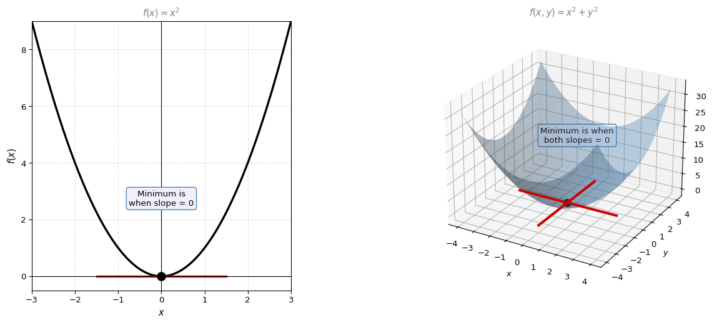
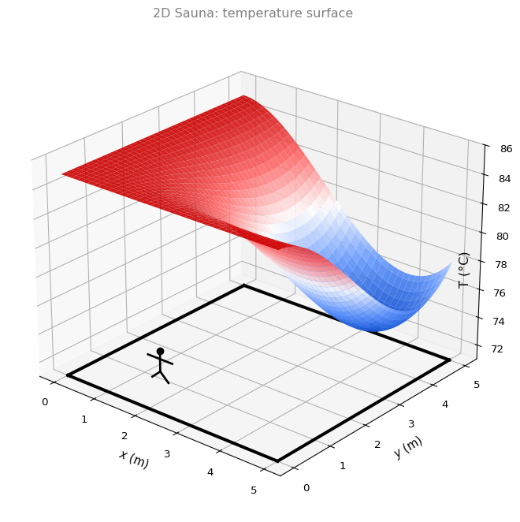
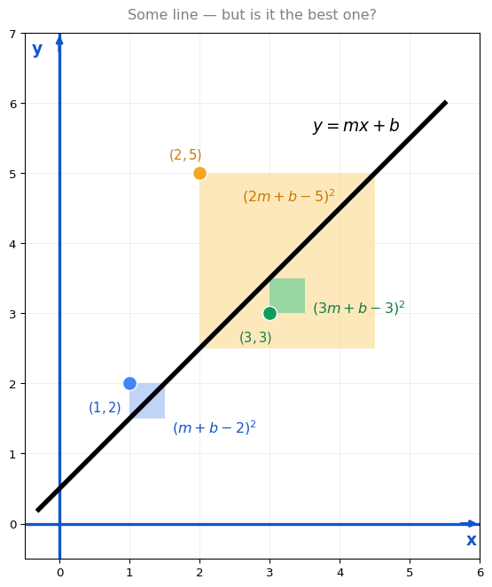
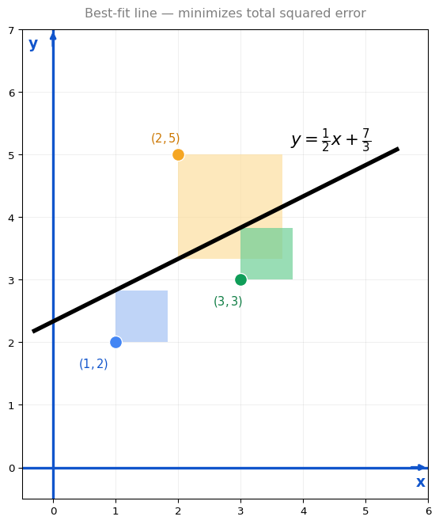

Gradients
calculus
Now that you know what a partial derivative is, you pretty much know what a gradient is.
Recall: for \(f(x,y) = x^2 + y^2\), we can take two partial derivatives:
- \(\frac{\partial f}{\partial x} = 2x\)
- \(\frac{\partial f}{\partial y} = 2y\)
The gradient is simply the vector containing all the partial derivatives:
\[ \nabla f = \begin{bmatrix} \frac{\partial f}{\partial x} \\\\ \frac{\partial f}{\partial y} \end{bmatrix} = \begin{bmatrix} 2x \\\\ 2y \end{bmatrix} \]
The symbol \(\nabla\) is called “nabla” (or “del”). The gradient \(\nabla f\) is a vector that describes the tangent plane, because it contains the slopes of the two tangent lines that form the plane.
If a function has 17 variables, its gradient is a vector with 17 entries, one partial derivative per variable.
Example: Find the gradient of \(f(x,y) = x^2 + y^2\) at the point \((2, 3)\).
We already know \(\nabla f = (2x,\; 2y)\). Substituting \(x = 2\) and \(y = 3\):
\[ \nabla f(2, 3) = \begin{bmatrix} 2(2) \\\\ 2(3) \end{bmatrix} = \begin{bmatrix} 4 \\\\ 6 \end{bmatrix} \]
That is the gradient at the point \((2, 3)\). It tells you the surface is going up with slope 4 in the \(x\)-direction and slope 6 in the \(y\)-direction.
Gradients and Maxima/Minima
The gradient is useful for minimizing functions of two or more variables in the same way the derivative is useful for minimizing functions of one variable.
One variable (review): For \(f(x) = x^2\), the minimum is where the slope is zero. You solve \(f'(x) = 0\), which gives \(2x = 0\), so \(x = 0\).
Two variables: For \(f(x,y) = x^2 + y^2\), the minimum is the point where the tangent plane is parallel to the floor. That happens when both partial derivatives are zero simultaneously:
\[ \frac{\partial f}{\partial x} = 0 \quad \text{and} \quad \frac{\partial f}{\partial y} = 0 \]
In other words, the minimum occurs when the gradient equals the zero vector:
\[ \nabla f = \begin{bmatrix} 0 \\ 0 \end{bmatrix} \]
For our function:
\[ \frac{\partial f}{\partial x} = 2x = 0 \implies x = 0 \] \[ \frac{\partial f}{\partial y} = 2y = 0 \implies y = 0 \]
So the minimum is at \((x, y) = (0, 0)\), which is the bottom of the bowl.
Note
The rule: To find the minima and maxima of a function of multiple variables, set all partial derivatives to zero and solve the system of equations. If the function has 12 variables, you need all 12 partial derivatives to equal zero.
This is the direct generalization of the one-variable optimization recipe: take the derivative, set it to zero, solve. The only difference is that now you have multiple equations to solve simultaneously.
Optimization Example, 2D Sauna
In the one-dimensional sauna from earlier, you could only move left or right along a bench. Now imagine a more realistic scenario: you are standing in a two-dimensional room and can walk in any direction. The room is a 5-by-5 space, and the temperature varies across it. You want to find the coldest spot.
For each position \((x, y)\), the temperature is given by:
\[ T(x, y) = 85 - \frac{1}{90}\, x^2(x-6)\, y^2(y-6) \]

The hot spots are high (red) and the cold spots are low (blue). How do you find the coldest point?
The approach: Just like before, the minimum occurs where the tangent plane is parallel to the floor. That means both partial derivatives are zero:
\[ \frac{\partial T}{\partial x} = 0 \quad \text{and} \quad \frac{\partial T}{\partial y} = 0 \]
Computing the Partial Derivatives
Taking the partial derivative with respect to \(x\) (treating \(y\) as constant):
\[ \frac{\partial T}{\partial x} = -\frac{1}{90}\, x(3x - 12)\, y^2(y-6) \]
Taking the partial derivative with respect to \(y\) (treating \(x\) as constant):
\[ \frac{\partial T}{\partial y} = -\frac{1}{90}\, x^2(x-6)\, y(3y - 12) \]
Finding the Critical Points
Setting each to zero and solving (a product is zero when at least one factor is zero):
From \(\frac{\partial T}{\partial x} = 0\): either \(x = 0\), or \(x = 4\), or \(y = 0\), or \(y = 6\).
From \(\frac{\partial T}{\partial y} = 0\): either \(x = 0\), or \(x = 6\), or \(y = 0\), or \(y = 4\).
This gives many candidate points. But most of them are either outside the room or are maxima (temperature = 85). The only minimum inside the room is:
\[ (x, y) = (4, 4), \quad T(4, 4) = 73.6 \]
That is the coldest spot in the sauna.
The process is the same as one variable: set the gradient to zero, get candidates, check which one is the actual minimum.
Optimization Example: Linear Regression (Power Lines in 2D)
In the one-dimensional power line problem, you placed a house on a line to minimize connection costs. Now the problem is in two dimensions: three power lines are located at coordinates on a plane, and you want to find the best straight line (a fiber connection) that minimizes the total squared distance to all three points.
This is exactly linear regression: given data points, find the line \(y = mx + b\) that best fits them.
Setup
The three power line positions are: \((1, 2)\), \((2, 5)\), and \((3, 3)\).
A fiber line has equation \(y = mx + b\). Each power line connects to the fiber line via a vertical wire. The cost of each connection is the square of the wire length (vertical distance).
- Blue power line at \((1, 2)\): cost \(= (m + b - 2)^2\)
- Yellow power line at \((2, 5)\): cost \(= (2m + b - 5)^2\)
- Green power line at \((3, 3)\): cost \(= (3m + b - 3)^2\)
The total cost to minimize:
\[ E(m, b) = (m + b - 2)^2 + (2m + b - 5)^2 + (3m + b - 3)^2 \]

Expanding and Simplifying
Expanding the squares and combining like terms:
\[ E(m, b) = 14m^2 + 3b^2 + 12mb - 42m - 20b + 38 \]
Finding the Minimum
Take both partial derivatives and set them to zero:
\[ \frac{\partial E}{\partial m} = 28m + 12b - 42 = 0 \]
\[ \frac{\partial E}{\partial b} = 12m + 6b - 20 = 0 \]
Solving this system of two equations:
From the second equation, multiply by 2: \(24m + 12b - 40 = 0\).
Subtract from the first: \((28m + 12b - 42) - (24m + 12b - 40) = 0\), giving \(4m - 2 = 0\), so \(m = \frac{1}{2}\).
Plugging back: \(6b + 12(0.5) - 20 = 0 \implies 6b - 14 = 0 \implies b = \frac{7}{3}\).
Solution
\[ m = \frac{1}{2}, \quad b = \frac{7}{3} \]
The best-fit line is \(y = \frac{1}{2}x + \frac{7}{3}\), with minimum cost \(E = 4.167\).

Note
This is linear regression. You have data points and you find the closest line by minimizing the sum of squared distances. It is one of the most important models in machine learning.
Problem with This Approach
Solving a system of 2 equations in 2 unknowns was manageable. But in real machine learning, you might have millions of parameters. Solving a system of millions of equations is extremely expensive. Is there a faster way?
Yes. It is called gradient descent, and you will learn it next.
Review Questions
1. Given \(f(x,y) = x^2 y + 3x^2\), find \(\frac{\partial f}{\partial x}\).
TipAnswer
Treat \(y\) as constant:
\[\frac{\partial f}{\partial x} = 2xy + 6x\]
1. Given \(f(x,y) = xy^2 + 2x + 3y\), find the gradient \(\nabla f(x,y)\).
TipAnswer
\[\frac{\partial f}{\partial x} = y^2 + 2, \quad \frac{\partial f}{\partial y} = 2xy + 3\]
\[\nabla f = \begin{bmatrix} y^2 + 2 \\ 2xy + 3 \end{bmatrix}\]
1. Find the gradient of \(f(x,y,z) = x^2 + 2xyz + z^2\).
TipAnswer
\[\frac{\partial f}{\partial x} = 2x + 2yz, \quad \frac{\partial f}{\partial y} = 2xz, \quad \frac{\partial f}{\partial z} = 2xy + 2z\]
\[\nabla f = \begin{bmatrix} 2x + 2yz \\ 2xz \\ 2xy + 2z \end{bmatrix}\]
1. Let \(f(x,y) = x^2 + 2y^2 + 8y\). What is the minimum value of \(f\)?
Hint: the question asks for the minimum output of the function, not the point \((x,y)\) that produces it.
TipAnswer
Set the gradient to zero:
\[\frac{\partial f}{\partial x} = 2x = 0 \implies x = 0\]
\[\frac{\partial f}{\partial y} = 4y + 8 = 0 \implies y = -2\]
The critical point is \((0, -2)\). The minimum value is:
\[f(0, -2) = 0 + 2(4) + 8(-2) = 8 - 16 = -8\]